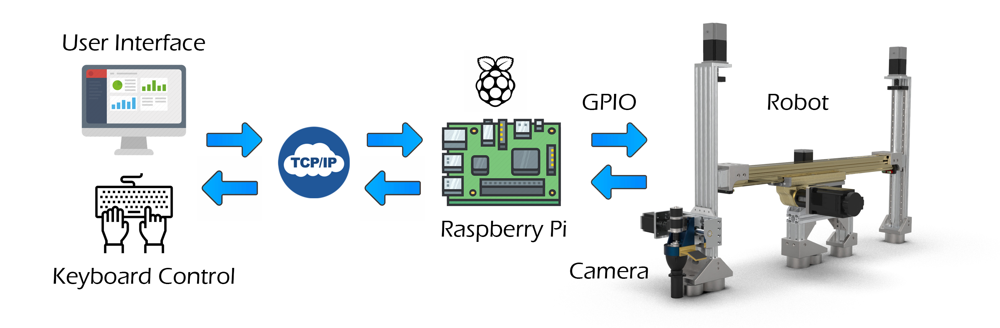
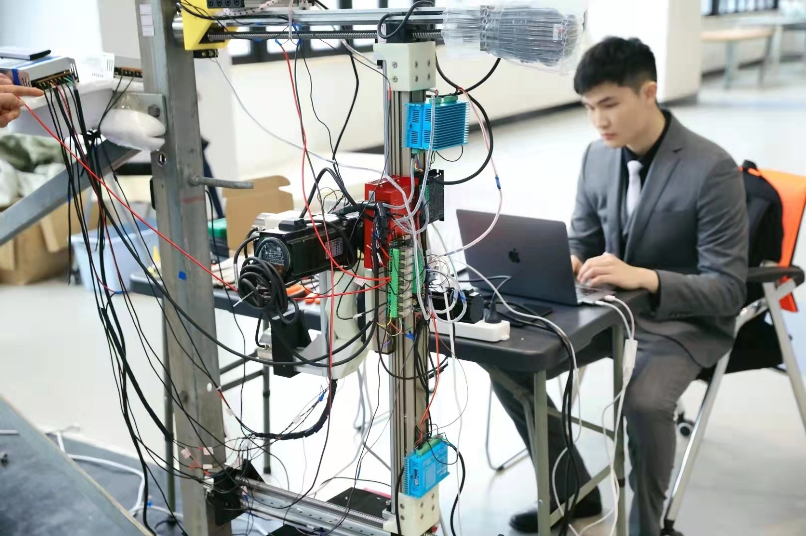

Object Retrieval from Granular Materials
Columbia University, Robotic Manipulation and Mobility (ROAM) Lab
May 2023 - Present
Abstract
We present object retrieval from granular media exclusively through tactile feedback.
The policy is trained with a Proximal Policy Optimization (PPO) framework in IsaacGym.
The real world deployment demonstrates a 68% success rate, and can generalize to over 20 unseen objects.

Robotic object retrieval from granular materials (poly beads here).

Our P2G (Push-to-Grasp) policy.

Overview of the robot system.
The motion control is based on Raspberry Pi.
The protocol used to send and receive commands and video is TCP/IP in Python.

Me controlling the robot prototype.
My Contribution
◊ Led the mechanical design of the entire robot including conceptual design and CAD modeling.
◊ Finished the entire motion control codes in Python using Raspberry Pi. Remotely controlled the robot with keyboard commands.
◊ Collaborated with 4 fellow students to manufacture the prototype and validated it.
◊ First author of the paper (yet to be published).